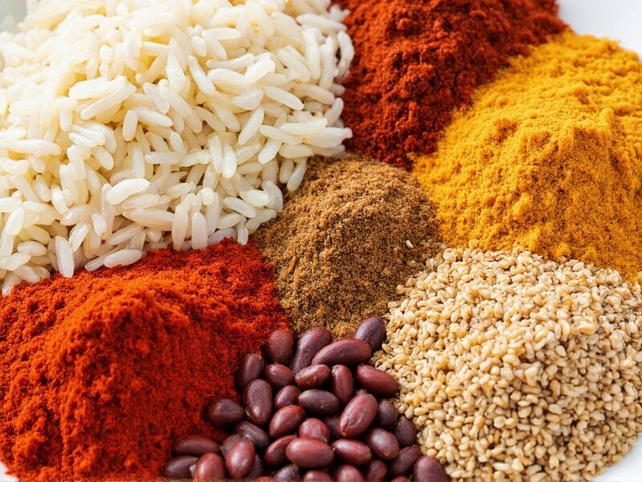

Stock Your Kitchen for Success
Building a functional kitchen doesn't require a fortune. By stocking up on a few versatile, shelf-stable basics, you can cook hundreds of different meals without running to the store every day. Here is our "Starter Kit" for the student pantry.

1. Dry Goods & Grains
These are the foundation of most affordable meals. They are cheap, filling, and last forever.
- Rice: White or brown rice is the perfect side dish or base for stir-fries.
- Pasta: Keep a few shapes on hand (spaghetti, penne) for quick dinners.
- Oats: The cheapest breakfast option that is also incredibly healthy.
- Beans/Lentils: Dried beans are cheaper, but canned beans are faster. Both are great protein sources.
2. Oils & Flavor Builders
You can't cook without fat, and you don't want to eat bland food.
- Cooking Oil: Vegetable or Canola oil for high-heat cooking (roasting, frying).
- Olive Oil: Great for salad dressings or finishing pasta dishes.
- Vinegar: Apple cider or white vinegar adds a necessary "tang" to sauces.
- Soy Sauce: Essential for adding salt and depth to Asian-inspired dishes.
3. The Essential Spice Rack
Don't buy a 20-pack spice set. Start with these four and build up.
- Salt & Black Pepper: Non-negotiable.
- Garlic Powder: Adds savory flavor without chopping fresh garlic.
- Paprika: Adds color and a mild sweetness to meats and veggies.
- Dried Oregano or Basil: Perfect for pasta sauces and pizza.
Want more details on shelf life? Check out the full guide at Budget Bytes: Stock Your Kitchen.